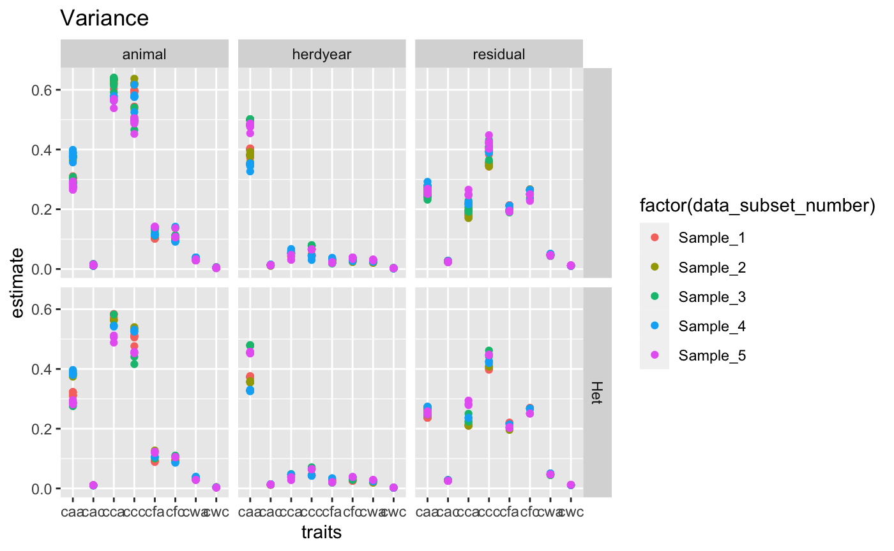

Overview of VCE results



Session Info
sessionInfo()
#> R version 3.6.3 (2020-02-29)
#> Platform: x86_64-apple-darwin15.6.0 (64-bit)
#> Running under: OS X El Capitan 10.11.6
#>
#> Matrix products: default
#> BLAS: /Library/Frameworks/R.framework/Versions/3.6/Resources/lib/libRblas.0.dylib
#> LAPACK: /Library/Frameworks/R.framework/Versions/3.6/Resources/lib/libRlapack.dylib
#>
#> locale:
#> [1] de_CH.UTF-8/de_CH.UTF-8/de_CH.UTF-8/C/de_CH.UTF-8/de_CH.UTF-8
#>
#> attached base packages:
#> [1] stats graphics grDevices utils datasets methods base
#>
#> loaded via a namespace (and not attached):
#> [1] Rcpp_1.0.4 compiler_3.6.3 pillar_1.4.4 tools_3.6.3
#> [5] rvcetools_0.0.7 digest_0.6.25 evaluate_0.14 memoise_1.1.0
#> [9] lifecycle_0.2.0 tibble_3.0.1 gtable_0.3.0 pkgconfig_2.0.3
#> [13] rlang_0.4.10 rstudioapi_0.11 yaml_2.2.1 pkgdown_1.5.1
#> [17] xfun_0.13 withr_2.2.0 stringr_1.4.0 dplyr_0.8.5
#> [21] knitr_1.28 desc_1.2.0 fs_1.4.1 vctrs_0.3.1
#> [25] rprojroot_1.3-2 grid_3.6.3 tidyselect_1.0.0 glue_1.4.1
#> [29] R6_2.4.1 rmarkdown_2.3 farver_2.0.3 ggplot2_3.3.1
#> [33] purrr_0.3.4 tidyr_1.0.2 magrittr_1.5 backports_1.1.8
#> [37] scales_1.1.1 htmltools_0.5.1.1 ellipsis_0.3.1 MASS_7.3-51.6
#> [41] assertthat_0.2.1 colorspace_1.4-1 labeling_0.3 stringi_1.4.6
#> [45] munsell_0.5.0 crayon_1.3.4
Latest Update
2021-03-16 10:57:27 (skn)